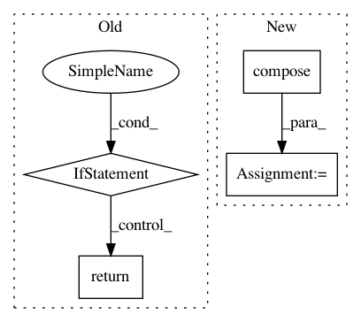

e4833d449452dc9b47a4e23c22c4b2b8abc7a682,geomstats/learning/exponential_barycenter.py,,_default_gradient_descent,#Any#Any#Any#Any#Any#Any#Any#,14
Before Change
The exponential_barycenter of the input points.
ndim = 2 if group.default_point_type == "vector" else 3
if gs.ndim(gs.array(points)) < ndim or len(points) == 1:
return points[0] if len(points) == 1 else points
n_points = points.shape[0]
if weights is None:
weights = gs.ones((n_points,))
weights = gs.cast(weights, gs.float32)
After Change
inv_mean = group.inverse(mean)
print(inv_mean.shape)
print(points.shape)
centered_points = group.compose(inv_mean, points)
logs = group.log_from_identity(point=centered_points)
tangent_mean = step * gs.einsum(
"n, nk...->k...", weights / sum_weights, logs)
mean_next = group.compose(
In pattern: SUPERPATTERN
Frequency: 3
Non-data size: 4
Instances
Project Name: geomstats/geomstats
Commit Name: e4833d449452dc9b47a4e23c22c4b2b8abc7a682
Time: 2020-04-13
Author: ninamio78@gmail.com
File Name: geomstats/learning/exponential_barycenter.py
Class Name:
Method Name: _default_gradient_descent
Project Name: geomstats/geomstats
Commit Name: d496aaefc795e176b615815e9f30f335860f013b
Time: 2018-01-22
Author: ninamio78@gmail.com
File Name: geomstats/lie_group.py
Class Name: LieGroup
Method Name: group_log
Project Name: geomstats/geomstats
Commit Name: d496aaefc795e176b615815e9f30f335860f013b
Time: 2018-01-22
Author: ninamio78@gmail.com
File Name: geomstats/lie_group.py
Class Name: LieGroup
Method Name: group_exp